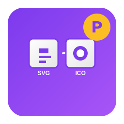

Polenta Icon Convert - PIconConvert

Description
PIconConvert is a powerful command-line utility that converts SVG files to ICO format. No external dependencies required! Perfect for developers who need to create Windows icons from scalable vector graphics.
Platform: Windows 10/11 (x64)
License: Freeware
Version: 1.0.0
Features
PIconConvert provides comprehensive SVG to ICO conversion capabilities:
-
Single File Conversion (
-i, --input)
Convert a single SVG file to ICO format. The output file will be created in the same directory or in a specified output location. -
Batch Processing
Convert multiple SVG files at once using wildcard patterns like*.svgoricons/*.svg. Process entire directories efficiently. -
Custom Output Directory (
-o, --output)
Specify a custom output directory or file path. If a directory is specified, files will be created with the same base name as the input files. -
Custom Icon Sizes (
-s, --sizes)
Specify custom icon sizes in a comma-separated list (e.g.,16,32,48,256). Default sizes are: 16, 24, 32, 48, 64, 128, 256. -
No External Dependencies
No need for Cairo, ImageMagick, or other external tools. Works out of the box with a single executable file. -
High Quality Rendering
Renders SVG graphics with proper scaling, gradients, and transparency support. Produces high-quality ICO files suitable for Windows applications. -
Lightweight & Portable
Single executable file with no installation required. Perfect for build scripts, CI/CD pipelines, and automation workflows. -
Quick Links (
-ws, --website/-don, --donate)
Open the Polenta Connection website or donate page directly from the command line.
Usage
PIconConvert.exe -i <input> [-o <output>] [-s <sizes>]
Examples
PIconConvert.exe -i icon.svgConvert icon.svg to icon.ico in the same directory
PIconConvert.exe -i icon.svg -o output.icoConvert icon.svg to a specific output file
PIconConvert.exe -i icon.svg -o output/Convert icon.svg to output/icon.ico
PIconConvert.exe -i *.svgConvert all SVG files in the current directory
PIconConvert.exe -i icons/*.svgConvert all SVG files in the icons/ directory
PIconConvert.exe -i *.svg -o output/Convert all SVG files to the output/ directory
PIconConvert.exe -i icon.svg -s 16,32,48,256Convert with specific icon sizes
PIconConvert.exe -i icon.svg -s 256Create a single-size icon (256x256)
Icon Sizes
ICO files can contain multiple icon sizes. The default sizes are:
- 16x16 - Small icons, taskbar
- 24x24 - Small icons
- 32x32 - Standard icons
- 48x48 - Large icons
- 64x64 - Extra large icons
- 128x128 - High resolution
- 256x256 - Maximum resolution
You can specify custom sizes using the -s, --sizes option with a comma-separated list.